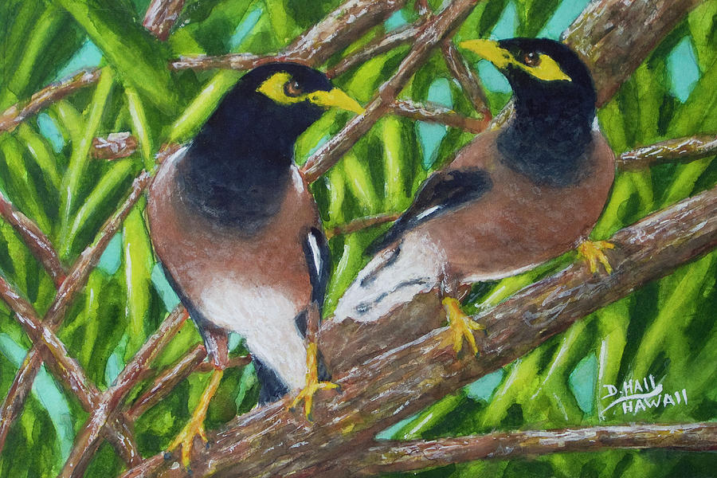

Prose
Tristis

He hates croissants.
The thing shatters when he bites it. Flakes go down his shirtfront and into his lap and he has to stand up in the parking lot and beat himself off like a man who's lost a fight with something. Bread is supposed to hold. That is the entire job of bread. What he wants is a slice of Bunny out of the bag and a butter knife, but the gas station does not carry Bunny, and anyway a loaf is a week of decisions and he has a few days left here. More, if the vault takes longer than it should.
The pimento cheese is fine. Pimento cheese was never the problem. It is the only spread in the cold case that is not meat.
Teddy found his father on a Tuesday afternoon in the kitchen in Lorain, blue, with a club sandwich on a plate beside him and a piece of it still in him, and the paramedics were kind about it and one of them said, this happens, sir, more than you'd think. So: no ham. No turkey, no bologna, no salami, no roast beef, no chicken salad, which is not deli meat but which he cannot look at either. He has thought about this and decided it is not a phobia, because a phobia is unreasonable and his reason is sitting right there on a plate in Lorain, Ohio, in 1971.
What is left to him is pimento cheese. What is available at eleven-forty in the morning, two minutes' walk from any hotel the contract puts him in, is a croissant.
So that is what he leaves himself.
The lot behind Bayfront Savings and Loan holds nine cars and today it holds four, and the asphalt is soft enough at the edges to take a heel print. August in Miami is not weather. It is a condition of the air, something that has settled and intends to stay, and Teddy has been in it eleven days and has stopped believing in the other kind. He sits on the low concrete wall at the back of the lot in the shade of a bottlebrush tree, and he eats his sandwich, and he does not go back inside for exactly as long as he can justify.
Inside, the books balance.
That is the trouble with them. Eleven days in and every ledger he has opened has closed, every total has found its bottom, every account he has traced has gone where it said it was going. The tellers are polite. The manager, a soft man named Arturo Pena with a very good watch, has given him a desk and a lamp and coffee in a cup and saucer instead of a mug, and has asked twice whether the light is adequate. Nobody has hurried him. Nobody has hovered. Everyone in the building has been kind to him in the particular way you are kind to a man you have already accounted for.
He is forty-eight. He has three years and change. The Cleveland office sent him because Miami is a long assignment and the young ones will not take it in summer, and because, Teddy suspects but has not made himself say, he is a man who is nearly finished and can be relied upon to be nearly finished.
The bird comes at eleven-fifty.
It comes on foot, which is the first thing he noticed about it and still the thing he cannot get past. It does not hop. Sparrows hop, grackles hop, the whole miserable congregation of the parking lot hops. This one walks, one foot and then the other, unhurried, all the way across the open asphalt in the full sun, and it walks like it is coming to see about something. Brown body, black head, a bare patch of yellow behind the eye like it has been marked for identification. White flashes in the wings when it decides to use them, which is not often, because it prefers, apparently, to walk.
It stops four feet away and turns its head to bring one eye to bear on him. Not the two. The one.
"There's nothing on it you'd want," Teddy says.
He tears off a piece anyway, the way he has for six days now, and sets it on the concrete between them, and the bird considers the offering for a moment with an air of great professional skepticism, and then walks over and takes it.
*
Saturday, on his one free day, Teddy takes the bus down Flagler to the library and stands in an aisle and reads about the bird.
The common myna is an invasive species. A cage escapee, a pest in eleven countries. The range map in the book is Asia and Australia and a scatter of islands. Florida is not on it. The bird is not supposed to be here either. It drives out native birds and takes their nests and their food and is, the book says, unusually intelligent and unusually bold. None of it says the bird will like him. All of it says the bird has learned that a man on a wall with bread is a reliable account.
He respects that. It is, at least, honest. It is the only thing in Miami that has wanted something from him and shown him the want plainly.
He rides the bus back in the heat and by habit, though it is Saturday and the bank is closed, he walks the two minutes from the hotel to the lot with a sandwich, because a man has to eat somewhere, and the bird is on the wall.
It is on the wall in the spot he sits, and it does not move when he approaches, only walks a polite two feet down the concrete and waits for him to settle.
"Arturo has a boat," he tells the bird. "Did you know that. Manager of a savings and loan, forty-one thousand a year, and he has a boat he calls a little boat, and I have seen the little boat, and it is not a little boat." He tears the croissant. "But it balances. Everything balances. He could have inherited. People inherit."
The bird walks over and takes the bread and walks back and Teddy watches it eat and feels, for the length of it, unlonely.
Then the bird says a number.
It is not a word at first. It is a run of sound, low and quick and burred at the edges, and Teddy's mind reaches for it the way it reaches for a name it half-knows, and then the sounds resolve and it is a number, said in a small buzzing voice with a catch in the middle of the s, the way a man might say it who had a lisp, or who was very tired, or both.
"Sixty-two four."
Teddy stops chewing.
The bird says it again, exactly, the same catch on the same sound. "Sixty-two four." And then a second run, a longer one, and this resolves too, patient, itemized, the voice of a man reading off a tape in an empty room. "Sixty-two four. And the rest goes Tuesday."
He sits very still. The heat sits on him. Somewhere out on Biscayne a truck changes gears and the sound arrives a full second late.
Birds do this. He knows birds do this. There was a starling in Lorain that did a car alarm so well the neighbors came out. The bird is not telling him anything. The bird is a tape recorder with feathers, and it has recorded something, and the only fact in evidence is that at some point, in this lot, in this shade, a man stood and said sixty-two four, and the rest goes Tuesday enough times, and with enough of the same flat music each time, that a bird four feet away learned it by heart.
Enough times.
That is the part Teddy cannot put down. Not that it was said. That it was said enough times to learn.
"Say it again," Teddy says.
The bird looks at him with the one eye.
"Go on," Teddy says. "Say it again." And he hears his own voice do a thing he does not like, come up out of him thin and wanting, a man asking a bird in a parking lot to please repeat the number, please, and he has the sudden clear sense of himself from above, from the height of the bottlebrush tree: a heavy man in a wet shirt on a concrete wall, forty-eight years old, holding a sandwich he hates, begging.
The bird finishes the bread. It does not say it again.
It turns and walks back out across the asphalt into the sun, one foot and then the other, unhurried, having concluded its business, and Teddy sits with the tape of it running and running behind his eyes. Sixty-two four. And the rest goes Tuesday.
*
Sunday, the motel gives him a wake-up call he did not ask for, and he lies in the cold of the air conditioner until nine, when he can call Carol without it being early there.
She picks up on the second ring. She is a second-ring woman. She has never in twenty-nine years let a phone go to a third if she was in the house, and Teddy, who has spent his life among people who let things ring, married her partly for it.
"Well," she says. "You're alive."
"I'm alive."
"It's hot, they said. On the news. They showed Miami and the man stood out in it to prove a point."
"It's hot," Teddy agrees.
He is sitting on the edge of the bed in his undershirt with the phone cord run all the way to its limit so he can reach the window, and through the gap in the curtain he can see the motel lot going white in the sun, and one grackle on the rail, hopping. He watches it hop and thinks, with a small private contempt he is not proud of, hopper.
"The Dillmans had their thing," Carol says. "The anniversary. I took the Pyrex, the good one, and I want to tell you Sharon Dillman served the ham on a board. A board, Teddy. Like a caveman. And everybody said how rustic."
"Rustic," Teddy says.
"I said it too. I stood there and said how rustic. What am I going to do, correct her." A pause, comfortable, the sound of her moving something in the kitchen, a cabinet closing. "You eating."
"I'm eating."
"You eating a vegetable or you eating gas station."
"There's a vegetable in it," Teddy says, which is true, pimento is a vegetable, he is fairly sure pimento is a vegetable, and Carol laughs her short laugh that means she has decided to let him have it.
And here is the place. Here is the exact place in the call, twenty-nine years wide, where a man could say a thing. Carol. Something happened in the parking lot. There's a bird and it counted, it said a number and a day, and it said it in a voice that wasn't its own, it said it in some man's tired voice, and Carol, I can't stop hearing it, I think I have found the thing they sent me here not to find and I think the smartest move of my life is to not find it, and I am afraid, Carol, I am sitting in Miami in my undershirt and I am afraid.
"Well," Teddy says. "I should let you go. It's long distance."
"It's Sunday, it's nothing on Sunday."
"Still," Teddy says.
"Still," she agrees, because this is the shape of it, this is how they hang up, one of them says still and the other one agrees and neither of them has ever once said the thing, whatever the thing was, in either of their separate silences, for twenty-nine years. "Call me Wednesday. Or before. Call me if it's before."
"I will."
"You won't, but say it."
"I'll call you Wednesday," Teddy says, and she is already gone, second-ring woman, no waste in her, and he sits with the dead phone in his hand and the grackle hopping on the rail and Miami going white outside, and the number sits down next to him on the bed and does not leave. Sixty-two four. And the rest goes Tuesday.
Tomorrow is Monday.
He puts on his shoes.
*
Monday he finds it in ninety minutes, which is the cruelty of it. All this time he has not found it because he was not looking with the number in his hand.
Sixty-two four. It will not be in an account. He knows that before he pulls a single tape. An account is a place a thing is written down, and the whole point of the number in the bird's mouth is that it is the thing nobody wrote. So he does the other job. Not looking at what is there. Looking at the shape of the hole where a thing is not.
He pulls the cash tapes and the Federal Reserve deposit slips, the record of the real money, the physical money, banded and driven up to the branch on Biscayne in a car. He lays a week of it out under Arturo's good lamp. His hands are doing the work before his mind will say the word. He runs a finger down the Tuesdays.
The Tuesdays are light.
Not by much. Not by an amount a man would see, if the man did not already have the amount in his ear in a lisping voice. He checks it against the Monday. He checks it against the Wednesday. He does it again with the adding machine, and the tape curls off the desk and onto the floor and he lets it lie there, and the number at the bottom is the number, Tuesday after Tuesday, sixty-two four, the same each time, near enough to call it exact.
He sits back. The cup and saucer have gone cold at his elbow. Down the hall a teller laughs at something, an ordinary sound with nowhere to go in a room like this one, and Teddy sits very still and lets it pass.
The money comes in. It is the summer of 1983 and there is more cash in Miami than in any bank town in the history of the Republic, and the money is counted. Some agreed and rounded portion of it does not go up to the Fed, and the books close anyway, because the books are not false. It is the world that is short. The money was never recorded because the money was never supposed to exist.
It is, Teddy thinks, the cleanest thing he has ever seen. You would have to already know. Someone would have to have told you, out loud, in the lot, Tuesday after Tuesday, to whoever came to carry it, until the very air of the place had it by heart.
Arturo Pena passes the open door and does not look in.
He has stopped looking in. The first day he looked in twice. Now he passes like the office is empty, like the desk is empty, and Teddy understands, watching the good watch go by in the doorway, that he has been read exactly as he was sent. A man three years from a pension. A man who can be relied upon to close a clean audit and go home.
The correct move is to be that man. To write the report that says the books balance, because they do, and to note nothing, because there is nothing he could prove without saying a bird told me. To drive to the airport Thursday and retire in three years and die, eventually, of something, in a kitchen or not, and never stand in a parking lot again if he can help it.
He gets his pen. He pulls the report toward him. He writes the date.
Then he sits, a long time, in the cold of the little room, and does not write the next thing.
At eleven-forty he gets up and walks to the gas station and buys the croissant he hates and carries it back to the wall in the sun.
"I found it," he tells the bird.
The bird walks over.
*
Tuesday, Teddy does the thing he has decided to do, which is nothing.
He sits at the desk in the little office with the report in front of him and one line written on it, the date, and he does not add to it. He has decided. A man is allowed to decide to be careful. He tells himself it is not cowardice, it is discretion, it is the reasonable caution of a man with three years left, and he almost believes it, the way he almost believes pimento is a vegetable, which is to say he has agreed to stop asking.
He works the clean parts of the audit. He initials things. He is aware of the day the way you are aware of weather coming, a pressure in the room, and at two o'clock a car he has not seen before pulls into the lot behind the bank, and a man he has not seen before gets out and goes in through the back, and at two-twenty the man comes out again carrying nothing that Teddy can see, and drives away, and the deposit that goes up to Biscayne that afternoon is light by an amount no one would ever notice.
Teddy watches it from the little window. He does not get up. He is very good, it turns out, at not getting up. It is the great skill of his life and he has never once put it on a resume.
At eleven-forty he had not gone out. It is the first day in Miami he has not gone out at eleven-forty. He tells himself it is because he is busy. He is not busy. He is afraid, and the shape of the fear is precise: he does not want to stand in the lot today, on Tuesday, on the day, and have the bird say the number to him while the car is there. He does not want to be a man in a parking lot talking with a bird about the number on the day the number moves. He has understood, without letting himself say it, that the lot is not safe. That the lot was never a break from the bank. That the lot is where the bank does its most honest work, out loud, to whoever is standing there.
So he stays in. He keeps the door of the little office open because closing it would be a statement and he is not ready to make a statement. And at four o'clock, when the bank empties, when the tellers cash out and Arturo does his walk-through and the good watch pauses, at last, in the doorway of the little office, Teddy looks up.
"Getting on all right?" Arturo says. "Light adequate?"
"Light's fine," Teddy says. "I'll be wrapped up Thursday."
Arturo nods. He looks at the report on the desk, at the single line, the date, the acres of white beneath it. He looks at it a beat too long and then he smiles, and it is a kind smile, an actually kind smile, which is the worst thing it could be.
"Take your time," Arturo says. "No hurry on our account. You've been very thorough." And then, turning to go, easy, over his shoulder, in the flat voice of a man reading off a tape: "Sixty-two four. And the rest goes Tuesday."
He is gone down the hall before Teddy can move. The good watch, going away. A door.
Teddy sits in the little office in the cooling building and does not breathe for a while.
The bird did not have a lisp. Teddy understands that now. The catch on the s, the small buzz in the middle of the number. That was not the bird's mouth. The bird was accurate. The bird had been accurate the whole time, faithful, a perfect instrument, giving back exactly what it was given, down to the speech of the man who gave it.
Arturo Pena has a lisp.
*
Thursday, Teddy writes the report.
It takes him forty minutes. It is a good report, clear and complete, and it says that the books of Bayfront Savings and Loan balance, which they do, which they have the entire time, which no one on earth could argue with, and he signs it, and he does not put a bird in it. There is no line on the form for the bird. He has looked.
He drives the rental to the airport with the windows up and the air going and the radio off. He turns it in. He sits at the gate two hours early because he has always sat at gates early, and he watches the planes come and go on the hot glass, and he does not think about the number, which is to say he thinks about nothing else, and eventually they call his row.
Carol picks him up in Cleveland. It is cool there, blessedly, the first cool air on his skin in two weeks, and she has the good Pyrex in the back seat because she is coming from somewhere, and she asks him was it hot and he says it was hot and she says they showed it on the news and he says he knows. She does not ask him what he found. It would not occur to her to ask. He closed a job; he closes jobs; he is home.
He does not tell her. There is nowhere in the marriage to put it, the same as there was nowhere to put anything, and he loves her, he does, in the worn and roomless way of a man who has run the cord to its limit and found the wall.
He goes back to work. He closes other banks, cleaner ones, or dirtier ones that hide it worse, and he finds what he is meant to find and misses what he is meant to miss, and the three years go, and then he is done, and there is a cake, and a watch, not a good one.
It is in the retirement, in the long flat back half of it, that the parking lots get him.
Any of them. A grocery store, a pharmacy, the lot at the doctor's where he goes now for the things a body does. He will be walking to the car with a bag, an old man, unhurried, and somewhere in the ornamental trees they plant at the edges of these places a bird will be running its inventory, a grackle, a starling, a jay, the ordinary hoppers of Ohio, and Teddy will stop. He cannot help it. He stands in the sun with his bag and he listens, all the way to the end of the sound, every time, in case.
He knows it will not be the number. He knows the bird is in Miami, if it is anywhere, if it is still alive, a bird that walked instead of hopped and told the truth to whoever fed it. He knows the odds. He is a man who has spent his life on the arithmetic between the ledgers, and the arithmetic here is absurd, is nothing, is a coward's superstition.
He listens anyway. He stands in the parking lot with his heart going and he waits for the bird to finish, to say the thing, to hand him back at last, in some tired lisping voice, the number he balanced and the day he did nothing, and the birds of Ohio say what birds say, which is not it, which is never it, and Teddy gets in the car.
He drives home. He tells Carol nothing. The books are closed.
They balance.
Griffin Paschall is a failed actor, author and playwright from Puryear, Tennessee; with its dirt still probably hiding underneath his fingernails. A certain wickedness can be seen in his refusal to finish. His first drafts are his last; anything more is a distorted perversion.